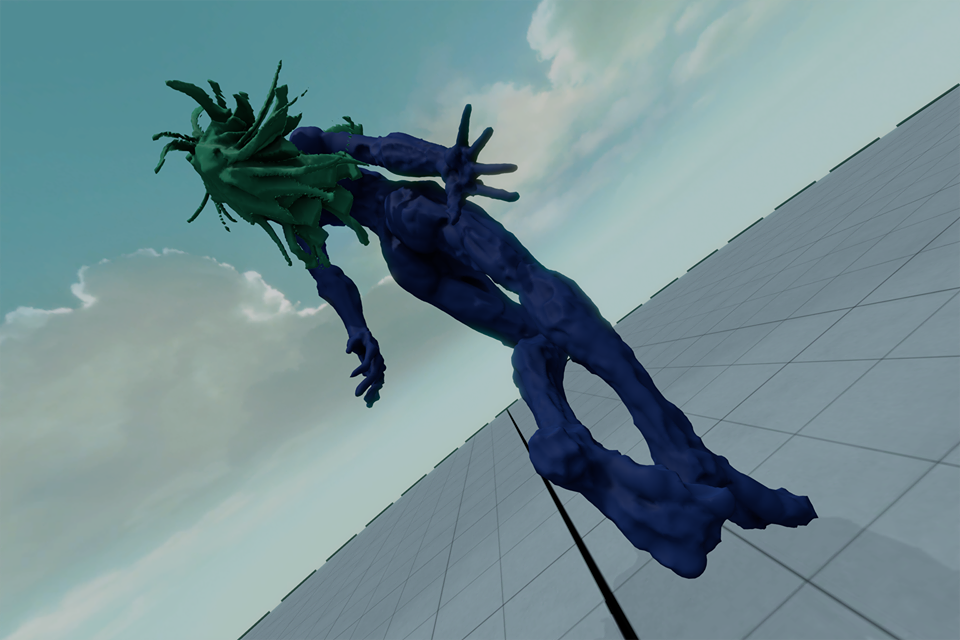
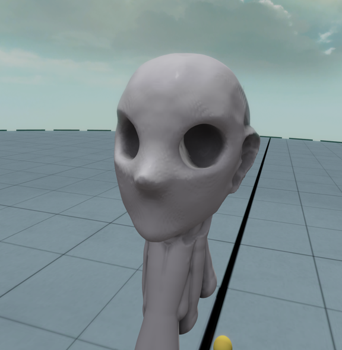

Medium沼へようこそ
概要
チュートリアルやれば操作のすべてはだいたい漠然とそれとなく気持ち理解できるのだけれど、まだわからないところがあるので探しつつ遊んでる。
時間が溶ける。よいお肉くらい柔らかく溶ける。
なんかそれっぽい人型を作って悦に入っている(2体目くらいをワキワキしてる
これはね～～もうねーーーいいおもちゃだよ＝＝＝～～
チートシート作ってる。
一作目 2016/12/08 2時間くらい

操作のチートシート用の画像をあとで追加するつもり。
公式FAQ
https://forums.oculus.com/community/discussion/45812/medium-frequently-asked-questions
簡単にaddとremoveを切り替えるには
右手のAボタンをダブルクリックすると、addとremoveが切り替わる。
Mediumからのexportどうなってんの
ボタンはある。二度押せば出力されるんだけど、なんかよーわからん。どこにexportされてるのこれ。
撮影したPhotoとかの画像ファイルはどこにあるの
Document/Medium/Photosにあった。
オブジェクト全体を移動する
視界(カメラ)に対する処理。
左右どちらかのトリガーを引いたままコントローラを動かすことで、オブジェクト全体を移動することができる。
オブジェクト全体を拡大縮小
視界(カメラ)に対する処理。
左右両方のトリガーを引いたままで、左右のコントローラの位置で、オブジェクト全体を拡大縮小することができる。
任意の単位での移動
レイヤー単位で操作ができる。
レイヤー表示モード(左スティック下げっぱなし)中に、左右どちらかのトリガーを引いたままコントローラを動かすことで、そのレイヤーに属するパーツを移動できる。
複数のレイヤーの左端のチェックマークをオンにすることで、複数のレイヤーに属するパーツをあわせて移動することができる。
任意の単位での拡大縮小
レイヤー単位で拡大縮小操作ができる。
レイヤー表示モード(左スティック下げっぱなし)中に、左右両方のトリガーを引いたままで、左右のコントローラの位置でそのレイヤーに属するパーツを拡大縮小することができる。
複数のレイヤーの左端のチェックマークをオンにすることで、複数のレイヤーに属するパーツを同時に拡大縮小することができる。
スタンプを自作する
左スティック下げっぱなし中にStampボタンを押すと、現在選ばれているレイヤーの形状のスタンプが登録される。
自作したスタンプは、Customという枠で保存される。
テンプレート
いまんとこできなそうなので、なんか一枚レイヤーに絵を書いてからやるとよさそう。
パーツを分割する
カットが対応する。
が、ちょっと癖があって面白い。
特にシンメトリモードみたいなのの時に、一本のシンメトリな棒の端に対してカットを行うと、パーツが地続きかどうかで
分割されるレイヤ構造が変わる。
具体例は後で追加する。
この癖は事前に設計にいれておかないと面倒臭そう。
ポリゴンのポイントを掴みたい
ない。その辺ごっそり捨てる設計になってるっぽい。
盛る/削るというUIに終始してる。
色をつける方法
素材自体に色をつける場合と、ポリゴンに対して色を塗る方法の2パターンがある。
両方とも解像度(ポリゴン密度)的には差がないみたいなんだけど、きちんと塗り分けしたい場合は出力した後にテクスチャで頑張る、みたいなのが必要そう。
いくらなんでもパーツ単位で色を全部分けるとかするとポリゴン数が不味い。
外部ツールによるリトポとの相性
ZBrushで試してみたい。まだ未調整。ToDo。
ツールごとの特性
cray:ブラシ形状に盛る/削る。大雑把な質量を作り出すときに一番効率がいい。
素早く振ると中間が消えてしまうのが困りもの。また、削ることで平面を作り出すのは、インターフェースの方向も相まって割と苦手。
ブラシサイズを調整しつつ大雑把な盛り付け/削りを行い、他のツールを使ってバランスを整える、というのがすごく速い。
inflate:球状に膨らませる/穴を開けるツール。
特定の面に対して、球っぽく盛り上げたり、表面を起点として削ったりができる。
積層された素材に対して綺麗に穴を開けたり、穴のフチの輪郭を、どの面を盛るかのバランス見ながらいじったりする時にメチャクチャ便利。
すでに形成されている稜線に対しての操作をする時に重宝する感じ。
smudge:浅く面的に盛るツール。
面に対して、不均一な感じに盛りができる。スムーズに近い機能として使える。
感覚としては篩(ふるい)を使って指向性を持たせてパウダーを盛っている感じ。
篩としての形状は円形なので、
ここからおまけ：Mediumでのモデリング最速化を考える
例えばZBrushとかだと身近に先駆者がいて、
その人に教えてもらうことで「こういうのが作りたい場合はこう作ると楽」みたいなのが聞けてよかった。
で、Mediumでもそういうのを探してみようと思う。
要件定義
・用途を持ったモデルを
・形状に対して
・サクッと作る
みたいな技術は、とにかく数をこなしたい時にとても良い。
イテレーション回数をあげてクオリティを出したい時に試みるといいこと、っていうのはMediumにもあると思ってる。
具体的にはどんな要素がありそうか
ここでは、「いい感じのバランスを作り出すために試行する」という言葉を縮めて「尺を取る」にしている。
ざっくり次のショートハンドがありそう。順は実行順を意図したものではない。
1.パーツ構成の尺を取る
2.全体/全身の尺を取る
3.ボリュームの尺を取る
4.カラーリングの尺を取る
1.パーツ構成の尺を取る
どんなツールを後続に使って何をするか、という部分に依存しそう。
自分の場合は「ゲームで使う」なので、モーションが入ったりいろいろする。
レイヤー分けとかが影響しそうなんだけど今の所ムクで一発パーツで作った場合と比べて何がベストなんだろ的な試行錯誤中。
ようは保留。
2.全体/全身の尺を取る
現在注力するとすぐ成果がでそうな分野。
特にMediumの場合、1レイヤー使って下書きみたいなのをやると良さそう。
・棒で長さの尺を取る
・何かでパーツごとの広さの尺を取る
とかで考えて見るか。
スタンプを使うことで記号化してバランス見るのを簡略化、みたいなのも答えかもしれない。
3.ボリュームの尺を取る
Mediumの場合、マスクみたいな概念が一切ないので、レイヤー分けが全てという感じになる。
例えば隣接したパーツが影響を受けてしまうので、そういうのはレイヤー分ける時にすでに織り込んでおかないと辛そう。
また、ユニット単位みたいなのに対してスナップ、っていう概念もないので、一度動かしたパーツを元の位置に戻すのもしんどい感じがする。
この辺はもうファジーなツールと割り切ってしまうのも手かもしれない(どうせズレる)
でもカチッとしたものを作りたい場合どうすればいいんだろう。
2016/12/14 時点での最適化

なんか怖いんだけど。10分くらいでこの辺まで行けるようになった。
・球をデカめに作ってシンメトリの中心に置く
・crayで輪郭線を書く
・埋める
・smudge, inflateを使って面を整える
みたいな行程でいくと、最大面積をガシガシ作りながら、狙った形状を作り出せることがわかった。
自分にとって特に難しかったのが鼻みたいな突起物を綺麗に作る方法だったんだけど、
その辺りはcrayで輪郭を作るのを徹底すると楽になった気がする。
crayで輪郭 -> 埋める のあたりは、でかいブラシ使ってガシガシやるようにしてる。
smudgeでの面の整い方には癖があるんで、もっと使わないとな。
inflateで稜線の処理ができるのがわかったのが収穫。これで、エッジさえ生成できればどんな図形でも綺麗に盛れそう。